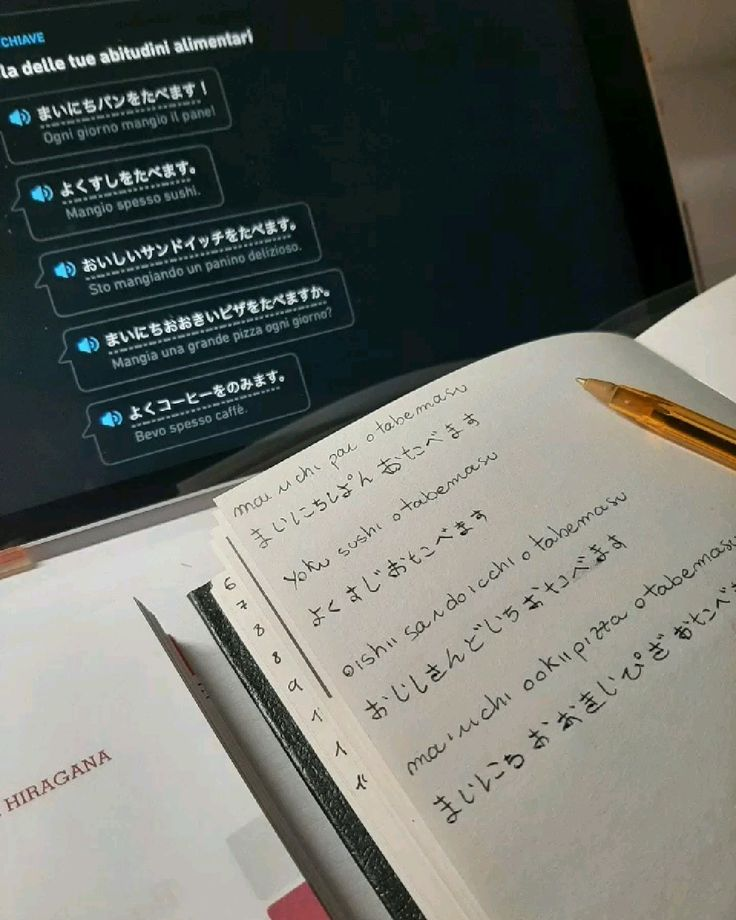
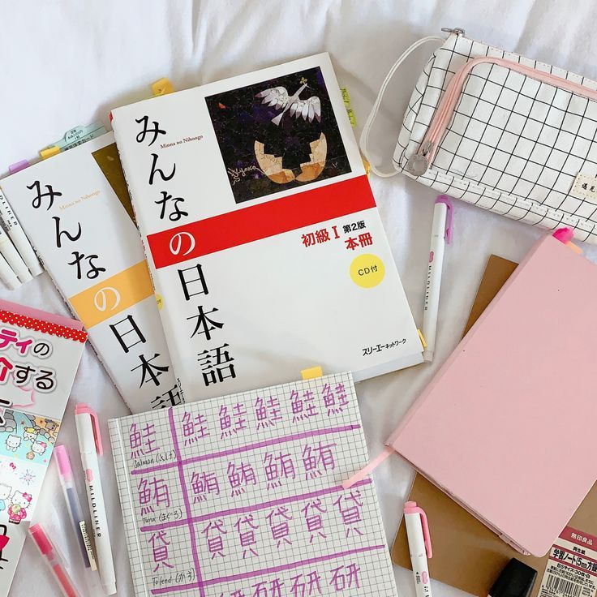

The Three Writing Systems
Japanese uses a combination of three writing systems: Hiragana, Katakana, and Kanji. Each system has a specific function in the language.
Hiragana (ひらがな)
Hiragana is used for native Japanese words, grammar particles, and verb endings. It is the first writing system children learn in Japan.
Katakana (カタカナ)
Katakana is used for foreign words, loanwords, scientific names, and emphasis. It has a sharper and more angular appearance.
Kanji (漢字)
Kanji are logographic characters borrowed from Chinese. Each character represents meaning and often has multiple readings.